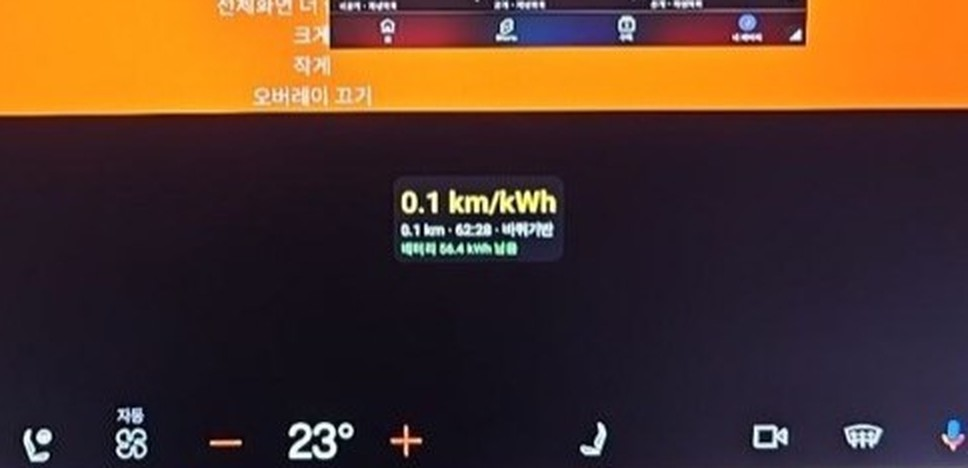
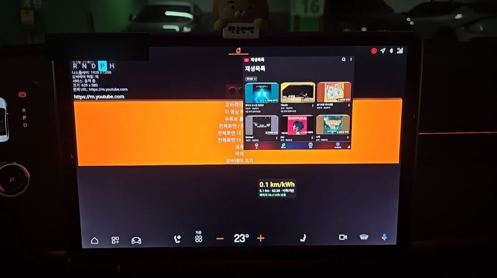

⚡ Efficiency Overlay (Trip)
An overlay that puts your distance · efficiency (km/kWh) · battery on the screen.
What is this app?
It shows you in real time how efficient this drive has been. It calculates distance from wheel rotation, so you can see driving efficiency in finer detail than the instrument cluster.
Key features
- Real-time distance / efficiency (km/kWh) based on wheel rotation
- Battery remaining (kWh) display
- Reset and recalculate even while stopped
How to use
- Launch the app → turn on the overlay → drag the header to move it, pinch to resize
Technical notes
- Distance priority: odometer → wheels (WHEEL_TICK) → speed integration (chosen automatically by permission/availability)
- Efficiency = distance ÷ energy used; while stopped only climate power is drawn, so it reads low
Screenshots


💬 댓글